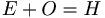

De: La Frikipedia, la enciclopedia extremadamente seria.
De: La Frikipedia, la enciclopedia extremadamente seria. De: La Frikipedia, la enciclopedia extremadamente seria.
Una sola más de las innumerables plagas que han azotado a la humanidad a lo largo de la historia.
Se trata de un curioso vehículo redondo con los polos achatados, uno de los cuales posee una extraña protuberancia. Según los herejes la tierra es de dicha forma -lo cual es estúpido porque algo tendría que "llenar la tierra" y eso haría que la tierra vuele con una brisa ligera, ni hablar de un tornado- y la protuberancia sería la casa de Papá Noel.
Algún día de verano de 1997 en alguna playa perdida del mundo mundial un explorador de avanzada de estos seres fue encontrado por una familia que pasó ahi después de estrellar el coche por andar como putos borrachos a exceso de velocidad en curvas. Como el amigo era algo timidín paró de rodar y esperó a que se marchen, pero los muy cagados del seso pensaron que era una pelota con la que se podía jugar al furbo abandonada por algún pobre tipo.
Se la pasaron jugando con el balón hasta que llamaron a los niñatos a acostarse y como se habrán imaginado se les quedó el balón en la playa. Al ser alienígena, que quedó peor que un friki despues de combatir 30 segundos seguidos en el Pressing Catch, esperó hasta recuperarse para volver a su base. Lo malo es que eran las 2:00 AM del domingo y los padres estaban en la fiebre del sábado en la noche y necesitaban balones de las discotecas para hacer la fiesta, así que decidieron improvisar con aquel ser desventurado, que logró escapar cuando los padres se durmieron con la mona.
Luego volvió a su base y alertó a sus compañeros de unos subnormales que lo estaban masacrando y colgando para hacer extraños movimientos con sus cuerpos mientras gritaban desesperados, quienes al escuchar su historia se aterraron y llegaron a la conclusión de que se debía hacer algo.
Fueron a plan malévolo para al día siguiente.
Enviar al explorador de nuevo con los subnormales aunque el camarada se niegue, para saber exactamente a qué mierda se están enfrentando.
Esperar pacientemente el informe del temeroso temerario espía.
Sacar las cuentas del enemigo y buscar un patrocinador. Ningún plan de dominio mundial está completo si no es patrocinado por alguna multinacional, o sino quién pondrá el billete.
Construir toda una serie de robots suicidas con bombas listos para cometer atentados en cualquier momento, que detonará ante una señal preprogramada o al apretar un botón o tras ser pellizcados por algún niñato u otro mecanismo análogo.
Colocar estratégicamente a todos los robots suicidas para el momento culminante.
Accionar el mecanismo de detonación cuidando de no destruir el mundo por no saber si sobrevivirán en el espacio o a una explosión mundial o a una exposición tan directa al calor.
De inmediato surgieron 2 problemas:
El punto es que a pesar de todo siguieron el plan original al pie de la letra, y nuestro prota o volvía donde los subnormales o se lo chocaban hasta llegar a las piedras filosas de la playa (después de todo siguen siendo balones).
Lo bueno es que era un día lunes y el civilizadamente por qué carajo no se presentó a trabajar, y al escuchar la historia del subnormal lo despidió y mandó a tomar por saco le prometió ayuda dentro de 5 minutos, lo que hizo que el padre llamase a los servicios de emergencia y fueran rescatados en un helicóptero. Nuestro amigo logró irse debido a que uno de los niñatos se quiso llevar "su pelota".
Dentro del helicóptero el niño demostró un gran amor hacia la pelota, lo que hizo que ésta dudase en seguir el plan por unos minutos, pero todo lo que se empieza tiene que terminarse así que continuó con su misión.
Un viernes por la tarde, aprovechando que los alguíen que recién está en una calle por primera vez).
Desafrotunadamente se le atrofió el sentido de la orientacion espacial por lo que lo único que podía hacer era esconderse de los enfermera y la pelota esa rodó hasta el regazo de una abuela que estaba sentada en una mecedora por ahí cerca. Nada se compara al amor y el cariño de una abuela. Ahora el único problema en eso es que llegaron las demás abuelas, y de ahi comenzaron a pelear porque cada una pensaba que se trataba de su nieto y chillaban como en la epoca que eran las putas segundonas de una mierda conocida como High School Musical. "El nieto" escapó viendo que ese no era un lugar seguro de vuelta a la calle, ya era de noche, pero le quedaba mucho por explorar, y lo más importante regresar a su hogar lo más antes posible de una puta vez encontrar el patrocinador.
Después de pasar la Mapocho, volvió a la calle. Por suerte estaba dentro del sector judío de la ciudad, por lo que la calle estaba desierta, así que aprovechando la calma siguió adelante con su misión: encontrar el patrocinador.
A las 11:00 AM se apareció una camioneta, a la cual se subió en la parte trasera, lo que no sabía es que esa era una camioneta de uno de los Nivea, que iba tarde a su oficina de trabajo. Cuando se dio cuenta de que había un objeto de apariencia esferoide (le vió el piquito de inflar), grande y de color azul. Ante esto dijo:
Ya metió mi hijo sus juguetes en la camioneta.
También habian autitos de juguete, figuritas de "acción", películas de ciencia ficción, y otras cosas que estaban metidas por ahí, por lo que debió volver a casa a descargar las cosas del vástago.
De vuelta en casa descargó todos los juguetes que habían en la camioneta, pero cuando le pasó la pelota al niño le dijo que eso no era suyo, pero que si era un regalo para el lo aceptaba para jugar al furbo (al parecer creció con las enseñanzas de que mentir lo llevaba al infierno), el padre dijo que no era un regalo y que no supo cómo llegó eso a su camioneta. Aún así confió en la inocencia del 50% de sus genes y se la dejó. (Advertencia: Un niño nunca miente).
Una vez ido (por la puerta, no de espermatozoide más óvulo ( donde H es hijo o hija) cambió la cara angelical que mostraba ante su progenitor por una llena de sadomasoquismo y maldad, ante la cual la pelota solo podía pensar en una simple idea: ¡¡HUYE POR TU VIDA!!, lo que hizo apenas vio esa cara. Ganaría algo de tiempo porque lo llamaron a almorzar sin la pelota, cosa que nuestro prota trató de sacarle el máximo provecho.
Rodó hasta el patio trasero y encontró una escalera de las del llame ya que lo llevaba a donde los cama elástica del vecino.
Hubo un ligero error de cálculo con respecto al lugar de impacto, si bien cayó en la cama elástica, fue en uno de los fierros que estaban al borde de esta, lo que hizo que saliese disparada a la ventana y la rompa ¿o qué se esperaban de un pelotazo en la ventana? aunque el vidrio de las ventanas de esa casa eran una mierda un poquito endebles.
La ventana que rompió era la del cuarto del vecino, que afortunadamente (o desafortunadamente) es el reemplazante de invierno del señor de la camioneta, que es medio Nivea sea su patrocinador.
En cuanto al niñato, se echo a llorar toda la tarde sin que nadie lo pudiese consolar.
El 27 de julio de 1997 fue presentado el proyecto en la sucursal de Nivea en Hamburguesa City donde se examinó las dimensiones del balón y del multinacional, y el presupuesto inicial para gastar en el plan. Los ejecutivos miraban alegres las cuentas que supondría la ejecución y consideraron "conveniente" lanzar el proyecto, por lo que el problema del patrocinador estaba resuelto.
Si a alguien le importaba lo que pasó con el ideas
Luego de estas negociaciones con los hostiles, el balón volvió a Islen Balearempf sorprendido de que alguien tan fumado como el jipi que lo llevó tuviese tanta credibilidad con sus objetivos cumplidos. Lo único que tenía que hacer era huir de ahí del modo que sea y no regresar más a esa civilización dar la señal a sus camaradas. Esto se debía terminar de una vez por todas.
Primero debia salir de esa NIVEA) en la que debió esconderse en la esquina de la pieza, cual encendedor.
Esa horrible pesadilla acabó cuando, después de almorzar, el testigo del deceso huyese despavorido de la escena y resolviera largarse a como dé lugar.
Salió de la videos de trofeo a gritos, golpes y arañazos. Mientras los gladiadores combatían entre ellos, el balón escapó a hurtadillas hacia la playa, mareado por unos minutos, pero con una leve noción de donde tenía que ir.
Al llegar a la playa se dio cuenta de que necesitaba un impulso muy fuerte para escapar al caza de la pelota, esta vez sin piedad alguna con aquel ser tan desgraciado, lo que hizo que huyera como loca de esa banda de seres malvados. Presa del pánico chocó contra algo esférico y logró desplazarlo, entonces consiguió el impulso necesario para salir de ahí y cagarse en esos especímenes alertar a sus camaradas (a pesar de ser azules eran de tendencias semi-comunistas) de los peligros de tal raza retrógrada y cruel.
Lo que pasó en realidad es que Roberto Carlos fue a pasar sus vacaciones de verano en mar adentro, que hizo que los vecindario rotas, trizadas, con grietas o con marcas de impacto donde supuestamente pegó una pelota.
En cuanto al prota, se hizo una versión cómica de sus aventuras en el océano, a pesar de nunca haberse sabido de este ser. Se conoce con el nombre de Robinson Crusoe.
Al llegar el explorador a su campamento (cómo lo logró encontrar sigue siendo un misterio, pero cuando llegas hecho mierda después de tanto tiempo, nadie suele preguntarlo), informó rápidamente de la situación y de los avances en el plan, y que esa especie subnormal es más peligrosa de lo que se había especulado.
Tras decir todo eso a la velocidad de los bólidos de la ese lugar mientras comían alimentos muy nutritivos.
En cuanto a los ejecutivos de Nivea, prosiguieron con una producción a gran escala de los artefactos, solo que no tenían el material para producir semejante cantidad, por lo que enviaron trabajadores al Mapocho. Hasta enviaron técnicos a participar en guerra de chatarra para hacer pruebas con lo que habia en ese depósito.
Lo curioso es que no lo pillaron, así que probaron con el material que más se acercaba pero muy lejos del ideal: el de las bolsas de plástico.
Lo bueno es que de eso había mucho por lo que pudieron problema pero del que no se dieron cuenta: tenían programado el lanzamiento masivo para Navidad. Pero al final no importó mucho porque la gente se las quiso llevar igual. Ahora la siguiente pregunta para que reflexionen en la casa, en el water, durante una paja o en donde quiera que se esté a gusto: ¿A quién se le ocurriría conseguir pelotas de playa en pleno invierno?
Pero habían algunos países en los que era verano para ese entonces así que pudieron ver sus pelotas puestas a prueba y al realizar el test un grupo de científicos siberianos vestidos de esquimales en playas con temperaturas superiores a los 30º Melvin que analizaron todas y cada una de las propiedades del balón por individuo y por grupo:
Estos resultados no dejaron contentos a los investigadores:
-velocidad: lenta -peso: se vuela con el viento fácilmente -estabilidad: muy poca o nula -aerodinámica: torpe -resistencia al fuego: revienta a los 15 segundos -resistencia eléctrica: si se revienta con un alambre sin anguila eléctrica -en hagua...: flota, pero si no cierras bien el piquito... -¿explota?: si, sobre todo si se te cae al fuego -¿algo más?: no exponer ante un niñato
No pudieron hacer pruebas por grupo porque los veraneantes no podían tener sus balones cerca de otras personas de tan egoístas que estaban (especialmente los niñatos).
Si quieren una traducción más exhaustiva, detallada y penosa sobre los resultados de dicho test véase cerapio
Esa fue una pregunta que se ha hecho la humanidad a lo largo de tiempos inmemoriables Los problemas, según algunos entendidos en el campo, tienen más de 1 sola solución:
Aunque al verlas ya queda claro cual es la solución correcta estos seres se pasaron pensándolo por semanas hasta que, en una tarde cualquiera de mamas de alguna modelo más o menos conocida.
Por lo que decidieron llenarlas más y con gases más ataque explosivo y para que al estar sometida a mayor presión la explosión será más fuerte (aunque lo adelgazaron un poco al final).
El 24 de abril de 1998 (tenía que ser en un equinoccio para poder patrocinar mejor la pelota y no sacarle celos a la otra mitad del mundo mundial) se lanzó a escala mundial el "Balon de playa de Nivea", que se convirtió en la última moda del siglo XX y en la primera del siglo XXI que marcó una época de de subnormales cuyas máximas aficiones eran comprar cosas inútiles, hacer cosas estúpidas, decir cosas estúpidas y pensar cosas estúpidas. El frenesí que llegaban a tener cuando quedaban pocos ejemplares era tal que algunas personas decidieron sacarle provecho a la situación.
Ningún solo rincón del horda de balones, aunque existen leyendas que hablan sobre unos lugares a los que no llegó la invasión, llamados selvas vírgenes, pero como esos lugares NO DEBEN tener presencia humana, no se ha podido corroborar si efectivamente dichos lugares existen o no.
A eso vamos a contestar que dentro de poco hogueras, astillas, hoguera).
El nivel de competitividad y falta de cuidado por las pelotas hizo que éstas estallen antes de su debido plan, lo que si bien a corto plazo les hizo llenarse hasta las ropas íntimas de tanto dinero que ganaban por día, el interés de las personas por los balones Nivea no se mantuvo en el tiempo, ya que se fueron a ver playboy por interné.
Finalmente no lograron acumular el número suficiente de pelotas para destruir el mundo y el grandioso plan demostró ser inútil desde todos los puntos de vista (aunque Nivea logró hacer su buen fajo de billetes para seguir desarrollando productos).
Autor(es):